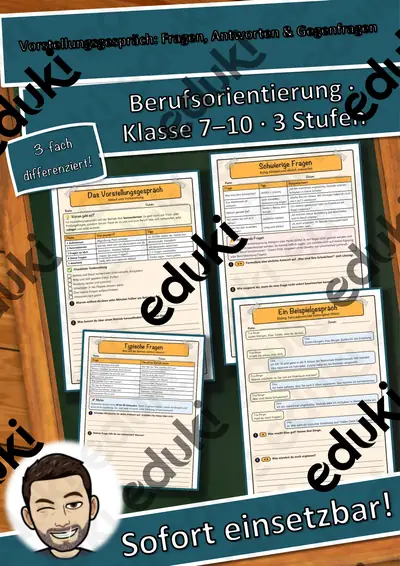
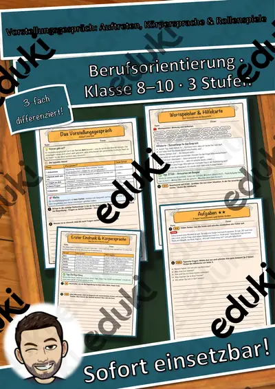
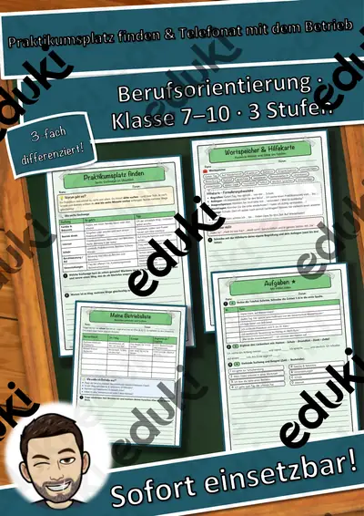

Lesespur: Der Zukunftstag – Lesespurgeschichte mit Rätseln (Klasse 8)
Begib dich mit deiner Klasse auf eine spannende Lesespur durch einen Zukunftstag im Betrieb! Die Kinder begleiten Lena und Jonas und den Azubi Tom – vom Empfang über Berufsberatung, Werkstatt, Büro, Gesundheitsstation und Küche bis zur Bewerbungs-Station, zum Vorstellungsgespräch und zur Abschlussrunde – und schnuppern dabei ganz nebenbei in viele Berufe hinein. Am Ende jedes Abschnitts verrät ein Hinweis den nächsten Ort auf dem Übersichtsplan – nur wer richtig liest und mitdenkt, findet den Weg und sammelt alle geheimen Buchstaben zum Lösungswort.
Diese Lesespurgeschichte verbindet motivierendes, sinnentnehmendes Lesen mit echter Berufsorientierung und schult zugleich das genaue Arbeiten. Das Material ist SOFORT EINSETZBAR und in DREI DIFFERENZIERUNGSSTUFEN (leicht ★ / mittel ★★ / schwer ★★★) angelegt, sodass alle Kinder einer Klasse am selben Thema arbeiten können.WICHTIG: Das komplette Material ist sowohl in FARBE als auch in SCHWARZ-WEISS enthalten – ideal zum Sparen von Druckkosten.DAS IST ENTHALTEN
- Lesespurgeschichte in 3 Niveaus (leicht, mittel, schwer)
- farbiger Übersichtsplan als Suchkarte
- Hörverstehen mit QR-Code zur MP3 (Kinder hören selbstständig mit Kopfhörern)
- vier Aufträge auf dem Weg: ein Verbinde-Rätsel, ein Berufe-Quiz, eine Prozent-Rechenaufgabe und ein Steckbrief
- Rätselseite (Wörter-Suchsel + Wissensfragen)
- Ausmalbild zum Thema (Berufe-Szene)
- ausführliches Lösungsblatt für die Lehrkraft
- alles zusätzlich als komplette Schwarz-Weiß-VarianteSO FUNKTIONIERT DIE LESESPURDie Kinder lesen ab START, entnehmen dem Text einen Hinweis auf einen Ort, suchen ihn auf dem Plan und lesen beim dort abgebildeten Buchstaben weiter. Eingebaute Sackgassen dienen der Selbstkontrolle. Am Ende werden die gesammelten Buchstaben umgestellt und ergeben ein geheimes Lösungswort. (Die Lösungen sind selbstverständlich nur im Lösungsblatt für die Lehrkraft enthalten.)INHALTLICHER SCHWERPUNKTBerufsorientierung und der Weg in den Beruf: verschiedene Berufsfelder (Handwerk, Büro, Gesundheit, Gastronomie), die eigenen Interessen und Stärken erkennen, der Unterschied zwischen Praktikum und Ausbildung, die vollständige Bewerbung (Anschreiben und Lebenslauf) sowie das Vorstellungsgespräch. Das Material stellt die Zusammenhänge sachlich und faktenbasiert dar und nennt bewusst keine realen Firmen oder Marken. So werden die Jugendlichen ermutigt, ihren eigenen Weg zu erkunden.ABGEDECKTER LEHRPLAN (Klasse 8)
- Wirtschaft & Beruf / Arbeitslehre / WBS: Berufsfelder und Berufswahl, Selbst- und Interessenerkundung, Praktikum und Ausbildung, Bewerbung und Lebenslauf, Vorstellungsgespräch, Arbeitswelt.
- Deutsch – Lesen mit Texten und Medien umgehen: Lesestrategien anwenden, Texten gezielt Informationen entnehmen, sinnentnehmend und selektiv lesen; Selbstkontrolle und Lesemotivation durch die Lesespur; Zuhören: einem Sachhörtext konzentriert folgen und Wesentliches entnehmen (Hörverstehen mit MP3).
- Mathematik – Prozentrechnung im Sachzusammenhang (Statistiken zu Berufen und Ausbildungsplätzen), Prozentwert berechnen und Ergebnisse deuten.
- Fächerübergreifend / Kompetenzen: Berufswahlkompetenz und Selbstständigkeit, genaues Lesen und Prüfen, Konzentration und Ausdauer, kreatives Gestalten (Ausmalbild).
Geeignet für Freiarbeit, Stationenlernen, Vertretungsstunden, Wochenplan und Homeschooling. Klassenstufe 8 (differenziert einsetzbar auch in angrenzenden Jahrgangsstufen).
Ähnliche Materialien

Lesespur: Die Bewerbung: Anschreiben, Lebenslauf, Vorstellungsgespräch – Lesespurgeschichte mit Rätseln (Klasse 9)

Vorstellungsgespräch: Fragen, Antworten & Gegenfragen – Bewerbung & Praktikum, 3 Stufen, mit Hilfen & Lösungen (Klasse 7–10)

Bewerbung & Praktikum – Paket Vorstellungsgespräch, Test & Vertrag: 6 Einheiten (Klasse 7–10)

Vorstellungsgespräch: Auftreten, Körpersprache & Rollenspiele – Bewerbung & Praktikum, 3 Stufen, mit Hilfen & Lösungen (Klasse 7–10)

Verhalten im Betrieb – Bewerbung & Praktikum, 3 Stufen, mit Hilfen & Lösungen (Klasse 7–10)

Praktikumsplatz finden & Telefonat mit dem Betrieb – Bewerbung & Praktikum, 3 Stufen, mit Hilfen & Lösungen (Klasse 7–10)

Lesespur: Die Bank – Lesespurgeschichte mit Rätseln (Klasse 8)